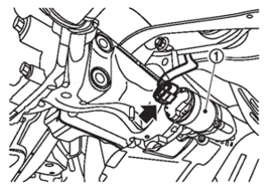
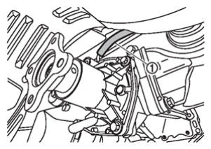
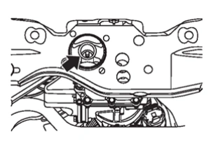
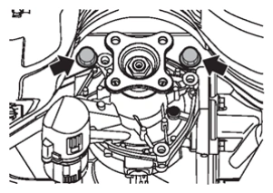
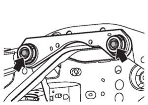

TRANSMISSION & DRIVELINE - DRIVELINE - REAR FINAL DRIVE: R145 - UNIT 拆卸 AND 安裝 - REAR FINAL DRIVE 總成
拆卸與安裝
N5040306C0003900ENG
拆卸
備註：
拆卸後差速器總成後更換 AWD control unit（與 electro-hydraulic coupling 總成的作動器總成合併）或 electro-hydraulic coupling 總成時，應於安裝前執行調整。請參閱
調整
.
拆下後傳動軸。請參閱
拆卸與安裝
.
注意：
油液可能從開口處洩漏。請使用蓋及/或塞子以防漏油。
自後差速器總成拆下傳動軸。請參閱
拆卸與安裝
.
斷開/拔除作動器總成的線束接頭
.

CF100ACOAA00ENG
拆卸通氣軟管
自 electro-hydraulic coupling 總成拆下。請參閱
拆卸與安裝
.

CF100ACPAA00ENG
將適當千斤頂支撐於後差速器總成。
拆卸後懸吊橫樑上的後差速器總成安裝螺帽。

CF100ACQAA00ENG
拆卸將差速器安裝支架與後差速器總成連接的螺栓及螺帽。

CF100ACRAA00ENG
注意：
將後差速器總成固定於適當千斤頂。
拆卸後差速器總成。
注意：
拆卸時將後差速器總成固定於適當千斤頂。
請參閱 引擎 <PR25DD> - Fuel System - 拆卸及安裝 - 油箱 -
拆卸與安裝
, 引擎 <4B4> - Fuel System<Vehicles for Vietnam> - 拆卸及安裝 - 油箱 -
拆卸與安裝
, 引擎 <4B4> - Fuel Supply - 油箱 <2WD> -
油箱拆卸及安裝
, 引擎 <4B4> - Fuel Supply <Vehicles for Taiwan> - 油箱 <4WD> -
油箱拆卸及安裝
拆卸將差速器安裝支架與後懸吊橫樑連接的螺栓及螺帽。

CF100ACSAA00ENG
拆卸差速器安裝支架及安裝擋塊。
安裝
注意下列事項，並依拆卸相反順序安裝。
有關不可重複使用零件，請參閱
分解圖
.
各緊固扭力，請參閱
分解圖
.
拆卸/安裝差速器總成時若發生漏油，安裝後請檢查油量。請參閱
檢查
.
安裝後執行調整。請參閱
調整
.
已加入書籤
書籤數量過多。
請刪除後重新加入書籤。
×
 .
.){kind=link}
){kind=link}
){kind=link}
){kind=link}
){kind=link}